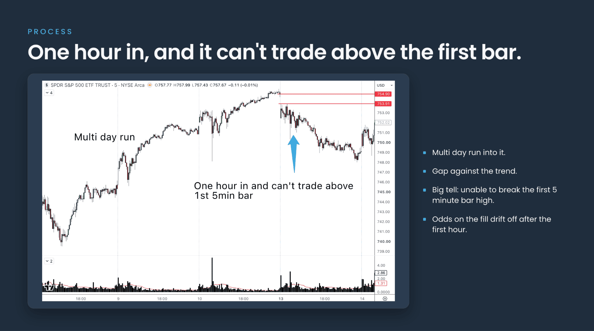

Everyone's heard of the gap-fill trade…
And almost everyone knows that gaps tend to fill when you test the data.
But that's only really half the story…
GAP OR TRAP

Not all gaps are created equal…
Some are small and fill quickly (who cares if a tiny gap fills, there's no real trade) Some are big, try to fill, then totally reverse again
And some? Well, if you like your face being ripped off, be my guest trying to fade them!
So in tonight's Pepperstone webinar we're going to explore the gap trade, both the fill and the fade.
Not just the pretty numbers but in the trenches stuff like:
- When to target the gap fill vs when to leave it or even fade
- How long to hold the gap trade before the odds just aren't worth it
- A checklist for reading the price response
- Plus a process to follow to help you frame your gap trade
As always, no one really knows where the market is going… but hopefully this webinar will give you some ideas to take away that improve your gap trading playbook.
Recording: Gap Fill Trading Strategy | Wed, Aug 12, '26 19:00
This webinar explored the Gap Fill from setup to exit, covering the mechanics, the logic and the risk considerations in full. Watch your full recording.